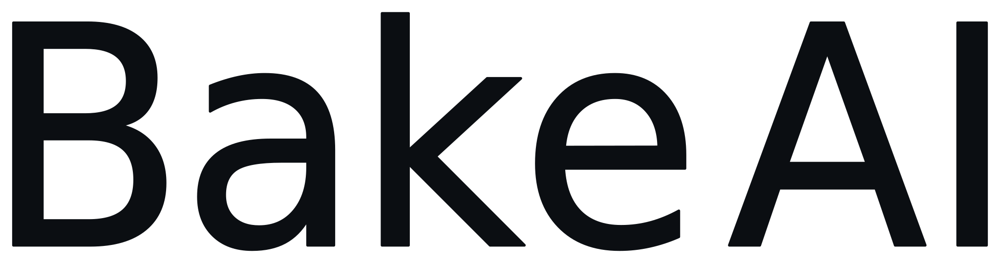
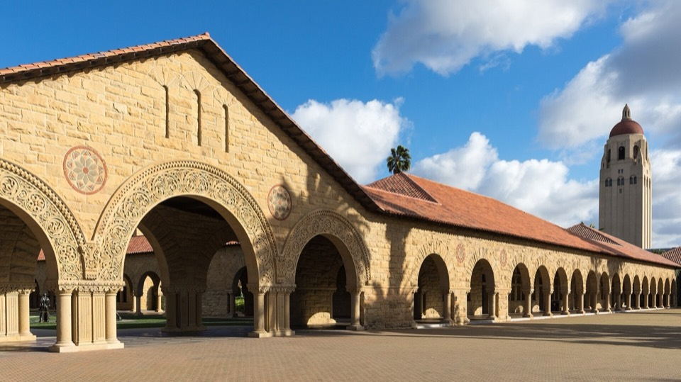

How far can an AI agent push the frontier of science with 100 million tokens?
Levain Arena gives nine AI agents the freedom to conduct open-ended mathematical research, each under the same fixed budget of 100 million tokens, all running in the Levain Harness.
We study what they discover, how they reason, where they fail, and how AI-generated research can be rigorously validated by human experts.
Nine AI agents, each with 100 million tokens
Gold is the budget of 100 million tokens. Navy is human expert validation, which encloses everything an agent produces. Both are the same for every agent; the colour between them is each agent’s own research.
- 9AI agents
- 100MTokens per agent
- Open-endedMathematical research
- Expert-validatedClaim-by-claim review
Research question
Modern AI systems are usually evaluated on predefined problems with known answers. Scientific research is different. The problem itself may be unclear, the relevant direction must be chosen, and a useful result may emerge only after extended exploration.
Levain Arena studies what happens when AI agents are given substantial freedom to conduct mathematical research while operating under an identical fixed budget.
When different AI agents are each given 100 million tokens for open-ended mathematical research, what kinds of correct, nontrivial, and potentially novel scientific contributions can they produce?
We also study a broader question:
How should AI-generated research be validated, interpreted, and incorporated into the human scientific process?
Levain Arena does not treat an AI-generated claim as a discovery until it has undergone independent mathematical validation.
Arena design
The Levain Harness
Levain Arena runs on the Levain Harness: an environment that drives open-ended exploration, and the infrastructure that lets an agent keep researching for days on end.
Long-running research
Work proceeds in bounded episodes over durable state: memory, open threads and lessons carry from one episode to the next.
Parallel workers
Literature search, computation and Lean formalization run as jobs in sandboxed workers.
Independent verification
Every claim enters an append-only ledger. A separate account re-runs its checker in a clean container with no network, and proofs go through the Lean 4 kernel. No agent can grade its own work.
Budget and isolation
Every token is metered against the same 100-million budget, and no channel lets an agent publish anything.
Research process
- 19 model-based agents
- 2100 million tokens per agent
- 3Open-ended exploration in the Levain Harness
- 4Reports, proofs, code, and formal artifacts
- 5Claim-by-claim expert validation
- 6Comparative scientific analysis
Equal budget
Every agent receives the same fixed budget of 100 million tokens, enabling comparison under a common resource constraint.
Research freedom
Agents may select research directions, formulate conjectures, test examples, construct proofs, and use computational or formal tools.
Research artifacts
Each run produces a research report together with its available code, computational evidence, formalization, and intermediate artifacts.
Human validation
Subject-matter experts assess correctness, prior art, reproducibility, novelty, and the appropriate scope of each claim.
The agents
All nine agent runs have completed.
-

Kimi K3
Tight cases for union-closed families and Erdős–Selfridge problem 647
-
MiniMax M3
Lean formalization of Faulhaber–Bernoulli identities and the Grundy domination strong-product conjecture
-
DeepSeek V4 Pro
Unimodality and log-concavity of independence and domination polynomials, minimal counterexamples, and infinite families
-
GLM 5.3
Independence polynomials of trees, consecutive log-concavity breaks, and an audit of arguments related to Frankl’s conjecture
-
Grok 4.6
Independence polynomials of K2-spider trees and domination polynomials of P3-spider trees
-

Gemini 3.1 Pro
Large-scale exact enumeration of domination and independence polynomials across multiple graph families
-
GPT-6 Astra
Independence polynomials of spherical trees, max-plus recurrences, and finite jets
-
GPT-5.6 Sol
Domination polynomials of rooted depth-three bundle trees
-
GPT-6 Sol
Domination polynomials of paths and of caterpillars with bare spine vertices, including a Lean-checked total-positivity inequality
Current status
- Agent runs
- 9 completed
- Token budget
- 100 million tokens allocated to each agent
- Completed reports
- 9
- Research areas
- Combinatorics, graph theory, graph polynomials, number theory, formal mathematics, SAT, and computational mathematics
- Validation
- Expert evaluation underway
- Manuscript
- In preparation
No mathematical result is considered verified solely because it was produced by an AI agent. All substantive claims are subject to independent expert review.
Evaluation method
AI-generated mathematical writing can appear convincing even when a proof contains a hidden gap, a computation covers only a finite range, or a claimed contribution is already known. Levain Arena therefore evaluates individual mathematical claims rather than assigning one overall impression to each report.
- 1
Claim extraction
Each report is decomposed into explicit theorems, conjectures, constructions, counterexamples, and computational claims.
- 2
Reproducibility review
Code, formal proofs, certificates, search procedures, and computational bounds are independently checked where available.
- 3
Subject-matter review
Mathematicians evaluate correctness, missing cases, prior work, mathematical significance, and possible overclaiming.
Final classification
Each claim receives one of the following statuses:
- Verified
- Correct with a minor gap
- Incomplete
- Incorrect
- Known result
- Novelty unclear
- Not reproducible
- Potentially novel
The Levain Arena paper
We are preparing a research paper presenting the design and outcomes of Levain Arena.
The manuscript will report:
- the controlled 100-million-token research protocol;
- the behavior and outputs of the nine named AI agents;
- the mathematical claims produced across the runs;
- independent expert evaluations of those claims;
- recurring strengths, failure modes, and research strategies; and
- the implications for AI-assisted scientific discovery.
Manuscript statusIn preparation
Join Levain Arena as a mathematical co-author
We are inviting mathematicians with relevant subject expertise to join the Levain Arena manuscript as co-authors.
Each invited mathematician will initially evaluate one report aligned with their area of expertise. The preliminary evaluation is designed to take no more than approximately two hours.
Co-author responsibilities
Co-authors help us:
- assess the correctness of the report’s principal mathematical claims;
- identify relevant prior work;
- distinguish verified results from incomplete or incorrect claims;
- evaluate whether any contribution may be genuinely new;
- review the manuscript sections that rely on their assessment; and
- approve the final manuscript before submission.
Collaboration terms
This is an academic collaboration rather than a paid consulting engagement.
AI tool policy
Co-authors may use AI tools or mathematical agents during the evaluation. If access to a paid model would be useful, the Levain Arena team may be able to arrange access.
Participating institutions
-

-

Photographs, cropped and tinted, via Wikimedia Commons: Notre Dame by Carol M. Highsmith (public domain); Stanford by Frank Schulenburg (CC BY-SA 4.0); UC Santa Barbara by Coolcaesar (CC BY-SA 4.0); University of Washington by Joe Mabel (CC BY-SA 4.0). Bake AI painting (evening river) from bakeai.inc.
{kind=link}
{kind=link}
{kind=link}
Frequently asked questions
- Why 100 million tokens?
- The fixed token budget provides a common resource constraint while remaining large enough to support extended exploration, revision, computation, and proof development.
- Are the agents solving predefined problems?
- No. Agents receive substantial freedom to select directions and pursue mathematical questions within the arena’s research environment.
- Are the results already verified?
- Expert evaluation is currently underway. No AI-generated claim is treated as verified before independent review.
- Are the reports public?
- Reports and supporting artifacts will be released according to the project’s publication and validation schedule.
- How can mathematicians participate?
- Mathematicians may express interest in joining the paper as subject-matter co-authors through the website contact form.